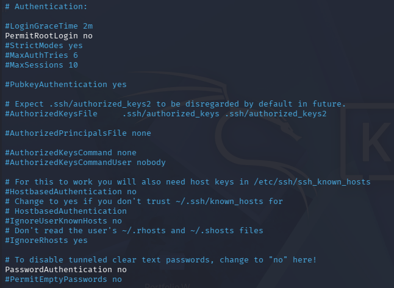
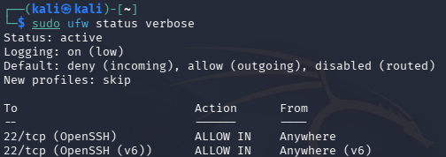
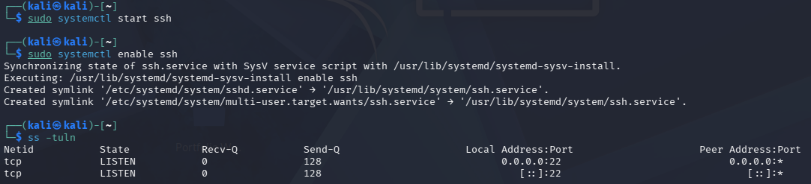
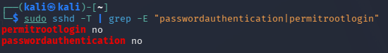

This project demonstrates the creation of a secure Linux testing environment designed to simulate enterprise server hardening practices. The environment showcases system configuration techniques including firewall rules, SSH key authentication, restricted user permissions, and automated patch management.
The lab environment was built using virtual machines to replicate a controlled infrastructure where security policies and administrative workflows can be tested safely without affecting production systems.
This environment was built and tested in a controlled virtual machine to safely apply and validate real security configurations. All outputs displayed below were generated from live system commands after hardening the system.
Provision a Linux server inside a virtual machine to simulate a controlled enterprise lab environment.
Create restricted user accounts and configure sudo privileges to enforce proper permission management.
Disable password authentication and configure SSH key-based login to secure remote access.
Configure firewall rules using UFW to allow only necessary services while blocking unauthorized traffic.
Enable automatic patching and update services to keep the system protected from known vulnerabilities.
# Secure Linux Lab Environment Setup (Demo)
echo "Updating system packages..."
sudo apt update && sudo apt upgrade -y
echo "Installing firewall service..."
sudo apt install ufw -y
echo "Configuring firewall rules..."
sudo ufw allow OpenSSH
sudo ufw enable
echo "Disabling password SSH login..."
sudo sed -i 's/#PasswordAuthentication yes/PasswordAuthentication no/' /etc/ssh/sshd_config
echo "Restarting SSH service..."
sudo systemctl restart ssh
echo "Security configuration complete."
The following outputs were collected from the hardened Linux virtual machine after applying SSH and firewall configurations.
passwordauthentication no permitrootlogin no
Status: active Default: deny (incoming), allow (outgoing) 22/tcp (OpenSSH) ALLOW IN Anywhere
tcp LISTEN 0 128 0.0.0.0:22 tcp LISTEN 0 128 [::]:22
Screenshots captured directly from the virtual machine during configuration and validation.



